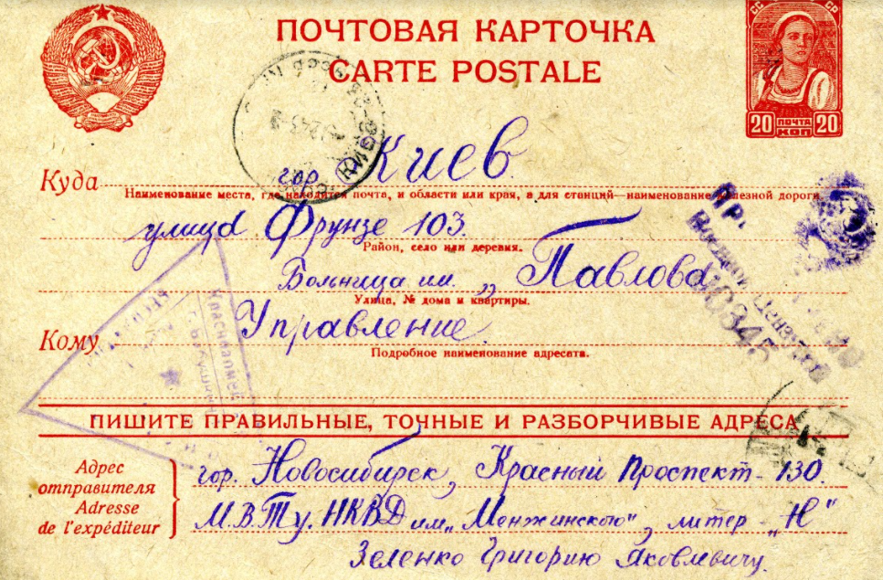
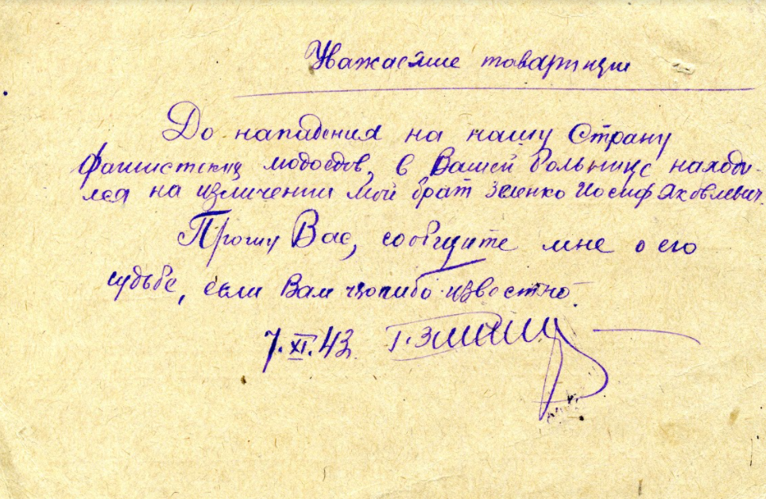

На відміну від масових розстрілів євреїв, загибелі полонених червоноармійців у таборах, які відбувалися практично на очах у місцевого населення, організація вбивств пацієнтів психіатричних лікарень носила скоріше утаємничений характер, здійснювалася "за зачиненими дверима" й до того ізольованих лікувальних закладів.
На території Радянського Союзу хвиля обмежень та насильства супроти людей з ментальними розладами розпочалась відразу на початку нацистської окупації. Пацієнти не евакуйованих лікарень стали одними з перших жертв масових вбивств айнзатцгруп-оперативних каральних формувань поліції безпеки (SiPo) та служби безпеки (SD) Саме ці спеціальні підрозділи були відповідальними за масові розстріли на територіях Радянського Союзу євреїв, сінті та ромів та рома? та комуністів. В співпраці з комендатурою міста, Вермахтом, місцевою поліцією та медичним персоналом вони знищили більшість пацієнтів до літа 1942 року. В областях України, які до 1939 р. входили до СРСР, масові вбивства відбулись у Вінницькій, Ігренській, Київській, Полтавській, Харківській, Херсонській, Чернігівській та інших психіатричних лікарнях. Загальна кількість жертв складала від 8 до 9 тисяч осіб. Окрім того, велика кількість пацієнтів померла від голоду та виснаження.
Психіатричні лікарні на території України, де відбувались вбивства пацієнтів під час окупації
Під час нацистської окупації в 1941-1942 рр. Мойсей Танцюра працював головним лікарем Київської психіатричної лікарні ім. Павлова, намагався врятувати своїх підопічних, оформлюючи фіктивні виписки. За час окупації цієї лікарні було вбито за різними оцінками від 800 до 1000 пацієнтів. У 1944 р. Танцюра був звинувачений у тому, що сприяв німецьким окупантам у знищенні хворих психіатричної лікарні та засуджений Військовим трибуналом військ НКВС Київської області 10 років позбавлення волі. 22 лютого 1946 р. Воєнна колегія Верховного Суду СРСР відмінила присуд Військового трибуналу через відсутність у справі Танцюри складу злочину й звільнила його з-під арешту.
Посвідчення завідувача поліклінікою 1-ї міської клінічної лікарні Києва, лікаря-психіатра Мойсея Танцюри. Квітень, 1943 р. (ГДА СБУ)
На фото Наум Балабан (1889─1942) ─ вчений-психіатр, завідувач психіатричної лікарні в Сімферополі. © Wikipedia.
Під час окупації Сімферополя німецькими військами залишився з пацієнтами психіатричної лікарні. Перебуваючи під постійною небезпекою (за національність - єврей), намагався врятувати своїх підопічних, оформлюючи фіктивні виписки. 12 березня 1942 разом з дружиною був затриманий поліцією безпеки, загинув за нез'ясованих обставин.
Варвара Володимирівна Кірсанова (Касимова), жителька Києва.
Загинула 19 жовтня 1942 р., Під час лікування у Київській психіатричній лікарні ім. Павлова. Варвару вбили у газвагені (душогубці) разом з останніми 36 пацієнтами лікарні.
Сиротою залишилась її 6-річна дочка Ірина. "У серпні 1942 року мама потрапила в Лікарню ім. Павлова як хронічна хвора неврологічного профілю. Хтось із сусідів дізнався, де мама, бабця знайшла її, носила передачі, зазвичай горіхи з дерев у нашому подвір'ї та якісь матеріали для рукоділля, а мене не брала з собою, бо треба було йти далеко пішки. Одного разу, 19 жовтня, бабця повернулася з пакуночком і сказала мені, що хворих вивезли в інше місто. Я багато років чекала маму, сподівалася, що вона повернеться, та якось випадково почула, як бабця розповідала знайомій, що бачила свою вбиту дочку в одній із ям — братських могил у Горішнику — тому Кирилівському гаю" (Ірина Малакова. Коли Київ залишили один на один із ворогом // День 27 червня 2012)


Листівка надіслана із Новосибірська до Київської психіатричної лікарні ім. Павлова на наступний день після визволення Києва, від Григорія Зеленко з проханням повідомити про долю його брата Йосифа. Листопад, 1943 р. (ГДА СБУ).
Таких листів у лікарню надійшло кілька сотень. За час нацистської окупації у лікарні було вбито від 800 до 1000 пацієнтів з ментальними розладами. Історії хвороб знищили, тому ці листівки від родичів єдина можливість повернути імена загиблих.


Меморіал радянським військовополоненим, пацієнтам Ігренської психіатричної лікарні. Житловий район «Ігрень» м. Дніпро. Фото 2012 р. © terraoblita.com
Під час нацистської окупації на території Ігреньської психіатричної лікарні (займала площу 600 га) розташовувалося відділення табору для радянських військовополонених (шталаг 348) та виправно-трудовий табір поліції безпеки і СД Дніпропетровськ. За свідченнями персоналу Ігреньської лікарні було вбито приблизно 600 пацієнтів, решта хворих помирала від голоду і супутніх хвороб. У дитячому відділенні евтаназію не проводили, діти загинули від нелюдських умов перебування. 27 вересня 1943 р.
На відміну від програми Т4 в Німеччині, де рішення про виокремлення та вбивства пацієнтів приймала група лікарів, на радянських територіях вбивства не мали централізованого характеру. Вбивства пацієнтів в українських психіатричних лікарнях проводились в декілька етапів і в кожній лікарні мали свої особливості. Першими жертвами ставали, як правило, важко хворі та євреї. Решта пацієнтів було вбито в період осені-зими 1941 та весни-літа 1942 року: смертельними ін'єкціями, розстрілами або у спеціальних машинах "душегубках". Велика кількість пацієнтів помирала від голоду.
Якщо для масового знищення єврейських пацієнтів підставою була расова ідеологія, то основою радикалізації насильства стосовно решти хворих стояли прагматичні калькуляції: звільнення приміщень для солдат Вермахту, для організації госпіталя, конфіскація майна та продуктів, передача до комендатури підсобних господарств, економія шляхом позбавлення „непотрібних їдунів".